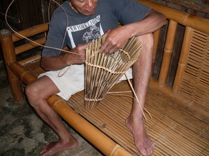

himu 
/himu/
Var.1: imu
v_rt.
“make/do”
1.
n.
work; action
Wrd.Gloss: work; action
Eng. work; action; deed; activity; duty
Online dict status: -
Usage level: F
v.
for someone (eggimu/eg-imu, miggimu/mig-imu/inggimu/innimu/in-imu, agent, eg><ø-) to do; to work; to make something (eggimuwen/eg-imuwen, innimu/inggimu/miggimu/in-imu/mig-imu/piggimu/pig-imu, theme, eg><en-) somewhere (eggimuwan/eg-imuwan, inggimuwan/in-imuwan/miggimuwan/mig-imuwan/piggimuwan/pig-imuwan, location, eg><an-)
Wrd.Gloss: make/do
Ne egkehimu ne salè diyè te gubilnu.
And commit a crime against the government.
Eggimuwan ku pad te salahan.
I'll just make a nesting box (for the chicken).
Mania te inggimuwan ki nikandin te liyuan?
How come that he's making (digging) a toilet for us?
Eng. do; make; work; achieve; implement; create
Tag. nilikhâ; nilaláng; kinathâ; kinapál
Ceb. linaláng; gamâ
Ilo.: naparsua
OCM: Cosmology (772)
Tag. gumawâ
Ilo.: arámid
OCM: Labor and Leisure (461)
DDP: Make (9.1.2.5)
Online dict status: -
Usage level: F
v.
for someone (egpekeyimu/egpekeimu, nekeyimu/nekeimu, agent, egpAkA-) to be capable to create something (egkeyimu, neyimu, theme, egkA><ø-)
Egpekeyimu a ne egsayè te Manama pinaahi te peg-ulahing wey te pegsayew.
I am capable to worship God by means of singing and dancing.
Eng. capable
Online dict status: -
Usage level: M
v.
for someone or something (egpakapeyimu, nakapeyimu, agent, egpAkA-rdpC-) to cause something or another thing to exist
Eng. exist, cause to
Online dict status: -
Usage level: M
v.
for someone (egpanggimu/egpang-imu, impanggimu/impang-imu/migpanggimu/migpang-imu, agent, eg><ø-paN-) to make something (egpanggimuwen/egpang-imuwen, impanggimu/impang-imu/migpanggimu/migpang-imu/pigpanggimu/pigpang-imu, patient, eg><en-paN-)
Si Amè ka egpanggimu te me tikes.
My father is the maker of leg bracelets.
Eng. manufacture; produce; make
Online dict status: -
Usage level: M
v.
for someone (egpeyimu, migpeyimu/impeyimu, agent, eg><ø-) to ask or request favor someone else (egpeyimuwen, impeyimu/migpeyimu/pigpeyimu, patient, eg><en-)
Eng. ask, to; request, to
Online dict status: -
Usage level: M
adj.
(mapangpanggimu, mA1-paN-paN-) creative; industrious
Eng. creative; industrious
Online dict status: -
Usage level: M
2.
v.
for someone (egpeyimu, migpeyimu/impeyimu, agent, eg><ø-) to transform
Eng. transform, to
Online dict status: -
Usage level: M
v.
for someone or something (egkeyimu/egkeimu, neyimu/neimu, actor, egkA><ø-) to become something
Ke egkeyimu e red ne ebugadu kaaselem, egpangabangan ku ka egkengaayu-ayu ne me duma ku.
If I become an attorney someday, I will protect my needy companions.
Eng. become
Tag. magíng
Ceb. mahimung
OCM: Development and Maturation (856), Vocational Education (874)
Online dict status: -
Usage level: F
3.
adv.
(hinimu, <in>-) made of
Eng. made of
Online dict status: -
Usage level: M
adv.
(hinimuwan, <in>–an) product of; product by
Eng. product of; product by; action; deed
Online dict status: -
Usage level: M
n.
(talaggimu, talag-) maker
Eng. maker
Online dict status: -
Usage level: M
4.
v.
for someone (eggimu-himu, miggimu-himu/inggimuhimu, agent, eg><ø-rdpRT-) to make alibi or any false reason or to manufacture reasons (eggimgimuwan, inggimgimuwan/miggimgimuwan/piggimgimuwan, location, eg><an-rdpCVC-)
Eng. alibi, to make; false reason, to make
Tag. gumawa na katwiran
Online dict status: -
Usage level: R
Updated by: RJH,JLM,RJH,AAA,RJH,QDL,RJH,NJK,RJH
Last updated: 12/Jul/2015
"himu" in text "Dreaming of being Rich"
"himu" in text "Morning Darkness"
"himu" in text "Senge lunggunan ne due me anak"
"keyimu" in healthbook "Mania te keilangan neg lu-luan ta ka me belad ta?"
"peggimu" in healthbook "Nekey-a ka kahew?"
"peggimu" in healthbook "Mania teg pakapatey kag iindes?"
"pekeyimu" in healthbook "Keilangan ka meupiya neg kakeen"
"keyimu" in healthbook "Egmenuwen ta ne keneg masulug ka me anak ta"
"himun" in song "Panugtuli a ki Hisus"
"himu" in song "Panugtuli a ki Hisus"
"himu" in song "Ke egpalemlemen ta ka krus"
This page last updated: 03-Jan-2020
Copyright © 2009-2014, Matigsalug Language Christian Association, Inc